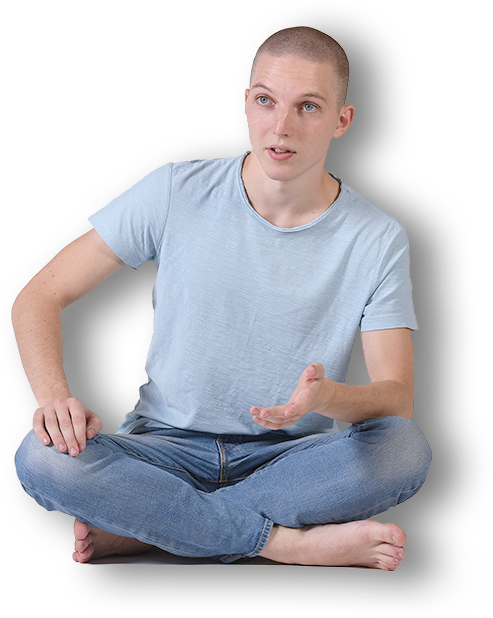

Йога и Цигун
Персональные занятия
Семинары, индивидуальное обучение вживую и онлайн, составление персональных тренировочных программ

«На мой взгляд, в отрыве от жизни практика совершенно не имеет смысла и ценности. Это очень мощный и точный инструмент как настроить себя таким образом, чтобы жизнь была более полной, осознанной и глубокой, а все, что ты делаешь по жизни делать просто более эффективно, качественно и без лишней суеты. И цель – найти гармонию с самим собой, а если гармония есть внутри, то и со всем остальным миром она образуется самым естественным путем»